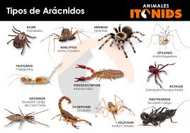

¿Qué son los Aracnidos?
Se trata de especies que cuentan con cefalotórax (la cabeza unida al tórax), cuatro apéndices bucales y ocho patas. Estos seres vivos, por otra parte, carecen de ojos compuestos y de antenas. Las arañas, los escorpiones y las garrapatas son arácnidos. Incluso los diminutos ácaros forman parte de este grupo.
Características
- Cuatro pares de patas (ocho en total). Puedes diferenciar a un arácnido de un insecto porque el insecto tiene tres pares de patas (seis en total).
- Los arácnidos también poseen dos pares de apéndices adicionales. El primer par, los quelíceros , ayudan en la alimentación y defensa. El par siguiente, los pedipalpos , ayudan al organismo a alimentarse, moverse y reproducirse.
- Los arácnidos no poseen antenas ni alas.
- El cuerpo de los arácnidos está organizado en el cefalotórax , una fusión entre la cabeza y el tórax; y el abdomen.
- Para adaptarse a la vida en la tierra, los arácnidos poseen sistemas respiratorios internos, como una tráquea o un pulmón en libro.
- Los arácnidos son en su mayoría carnívoros, se alimentan de los cuerpos pre digeridos de insectos y otros animales pequeños.
- Varios grupos son venenosos. Liberan el veneno desde glándulas especializadas para matar a su presa o enemigos.
- Varios ácaros son parásitos y algunos de ellos son portadores de enfermedades.
- Normalmente, los arácnidos ponen huevos, los cuales eclosionan y originan arácnidos inmaduros que son similares a los adultos. Sin embargo, los escorpiones dan origen a crías vivas.
Clasificación
Los seláceos se dividen en dos grandes grupos:
- Araneomorfas:La principal diferencia entre migalomorfos y araneomorfos es la orientación de los quelíceros:
- Migalomorfas:Los migalomorfos son un suborden del orden Araneae (arañas). El nombre último es por la orientación de los quelíceros, que no se cruzan entre sí, al contrario que en los araneomorfos.